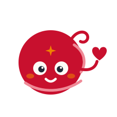
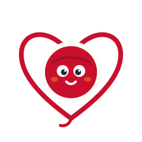
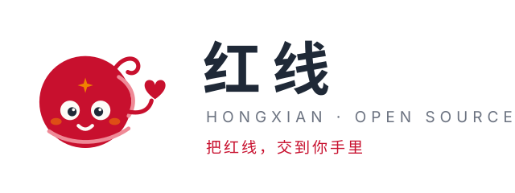
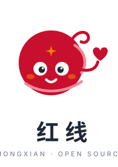
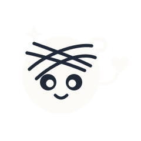
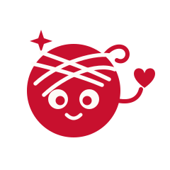

红线品牌视觉 = 1 个主形象 + 1 个符号版 + 2 种锁版 + 2 个单色版 + 1 个吉祥物家族。主形象与符号版是"标志"，受本规范约束；吉祥物家族与表情包是"插画资产"，可自由用于场景配图，但不得替代主 logo 出现在署名位。






| 背景 | 允许的标志版本 | 说明 |
|---|---|---|
| 纸白 / 浅灰（≥#F5F2EC） | 标准彩色版、单色红、横竖锁版 | 默认场景 |
| 墨色 / 深色（≤#2A3440） | 反白单色版（M 家族无亮红变体；#E8445C 提亮仅存在于归档 c 系符号） | 标准红在深底对比不足，一律反白 |
| 纯红线红底 | 仅反白单色版 | 红上红禁止 |
| 照片 / 渐变 / 花底 | 禁止直接叠放 | 需垫纸白或墨色圆角底板后再放 |
| 场景 | 最小尺寸 |
|---|---|
| 数字图标（头像 / favicon 除外） | ≥ 24 × 24 px |
| favicon / 超小尺寸 | 改用符号版 M4，≥ 16 × 16 px |
| 横排锁版 | 宽 ≥ 140 px |
| 竖排锁版 | 宽 ≥ 90 px |
| 印刷 | 图标 ≥ 8 mm，锁版宽 ≥ 35 mm |
小于 48px 时脸部细节会糊：一律切换 M4 或 mono 版，不要硬缩 M1。
| 资产 | 文件 | 姿态语义 | 推荐使用场景 |
|---|---|---|---|
| M1 线球小月老 | m1-yarn-heart.svg | 递出红线心 = 品牌主动作 | 主 logo、头像、署名位、OG 图 |
| M2 双球一心 | m2-yarn-couple.svg | 两人共牵一心 | 官网首屏、匹配成功页 |
| M3 线球月老（长辈） | m3-yarn-yuelao.svg | 白眉圆镜的靠谱长辈 | 月老 Skill 对话界面头像 |
| M4 线团之心 | m4-yarn-inheart.svg | 符号 + 吉祥物二合一 | favicon、≤48px 图标、水印 |
| M5 信封探头 | m5-yarn-envelope.svg | 邮局递信不拆信 | v2 信箱 / 广场功能页 |
| M6 举线比心 | m6-yarn-heartpose.svg | 双向同意才比心 | 第二次握手 / 意向封解锁 |
| M7 月牙安睡 | m7-yarn-moonsleep.svg | 静默值夜不打扰 | 空状态 / 等待回音 |
| M8 星芒眼 | m8-yarn-stareyes.svg | AI 心动时刻 | 匹配报告"别错过"档 / 启动页 |
| M9 织心 | m9-yarn-knitting.svg | 认真织你的红线 | 建画像流程 / 画像更新 |
| M10 放大镜 | m10-yarn-magnifier.svg | 错配克星在筛 | 本地比对 / 筛选 loading |
| E1 建画像 | e1-interview.svg | 拿笔提问 | 贴纸 / 访谈会话页 |
| E2 匹配中 | e2-matching.svg | 双手比卡 | 贴纸 / 报告生成中 |
| E3 毕业见面 | e3-graduation.svg | 递邀请封、功成身退 | 贴纸 / 毕业轮交接页 |
| E4 静默守护 | e4-silent.svg | 眨眼嘘声 | 贴纸 / 婉拒静默说明 |
1. 表情四联源文件为 240×280 矢量 SVG，文字已内置；导出贴纸统一 512×600 PNG、透明底（微信/飞书贴纸规格自行裁方）。
2. 表情可在聊天 / 社区 / 文档插图自由使用；不得单独截取脸部作为 logo 使用，不得修改内置文案。
3. 新增表情须沿用统一骨架：线球 r=62 @ (120,120)、缠线两笔、腮红月光橙 55% 透明、线头作手、 caption 22px 墨色字距 6。
| 类别 | 命名规则 | 当前文件 |
|---|---|---|
| 主标志 / 锁版 / 单色 | hongxian-* | hongxian-lockup-h.svg · hongxian-lockup-v.svg · hongxian-mono-red.svg · hongxian-mono-white.svg |
| 吉祥物姿态 | m<n>-<语义>.svg（深色底加 -w 后缀） | m1–m10（几何符号方案另存 c1–c5 归档） |
| 表情包 | e<n>-<语义>.svg | e1-interview · e2-matching · e3-graduation · e4-silent |
| 预览 / 文档 | *-preview.html / .png、本规范 | preview · mascot-preview · mascot2-preview · stickers-preview · mascot-guidelines |
所有 SVG 为纯矢量、无外部字体依赖（文字仅锁版/表情使用系统黑体回退）；交付第三方时连同本规范一并提供。